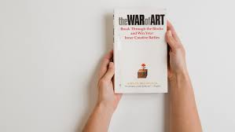

Zak Mohamed | June 15, 2023 | 4 mins
The Power of Constraints
Procrastination. It's something we've all dealt with at some point. While it seems like a simple matter of putting off tasks, it's a multi-faceted issue with various contributing factors. In my case, I've realised that two major culprits are ineffective planning and a lack of constraints. Here's my take on it.
Understanding Procrastination
When stuck in a rut, the best course of action is often to do something, anything. Even if it's unrelated to the task at hand, it breaks the lethargy. The simple act of getting out of bed or the chair and being active, however mundane the activity may be, creates a momentum that combats procrastination.
Interestingly, I've found it's harder to actively procrastinate than to passively procrastinate. While active procrastination involves deliberate efforts like sight-seeing or lunch with friends, passive procrastination usually looks like a never-ending spiral down the social media rabbit hole. The fact that my procrastination is almost never 'active' tells me that there is something about just doing things that inhibits whatever it is that precipitates procrastination.
My working theory is one of cognitive dissonance. When I'm actively procrastinating, cognitive dissonance sets in real fast. I feel immense discomfort if I am being otherwise productive or 'active' but not focusing on the important/urgent task I should be. It's a tug-of-war between wanting to be useful and the pull of unfinished tasks. It's a struggle I've written about before, where congruence between intent and action can help overcome resistance.
The Impact of Doing or Not Doing
One principle I've discovered and have come to call the 'do something' principle, is that doing something, anything, today significantly increases the chance of ones being productive tomorrow. Likewise, avoiding a task today decreases the likelihood of tackling it tomorrow. Momentum really matters. My level of output on any given day is almost always a function of my level of output in the preceding few days, regardless of how I am feeling, whether I am in sickness or in health etc.
This tells me that there is something far deeper than psychology going on here. It's almost mechanical, like physics. I refer to such principles as the 'physics of being human', and this particular branch of 'physics' in regards to my life is as immutable as the actual laws of physics.
Procrastination paints an intimidating picture of tasks. But, once you begin, you'll find that doing the work is far less uncomfortable than thinking about it. As Seneca famously said, "we suffer more often in imagination than in reality", and I can honestly say that I have never felt more uncomfortable doing a task I have been putting off more than I felt thinking (and procrastinating) about it before I started it.
For me, ineffective planning and the absence of constraints are the primary causes of procrastination. Let's delve into the latter, which I believe is far more important, and something I refer to as my 'Theory of Constraints'.
Embracing Constraints
Often, I procrastinate until a deadline looms, forcing me into action. However, because the time it takes me to complete a task tends to stretch to the full time I've allotted to it, in a counterintuitive sense it makes sense that I sometimes procrastinate. This is a massive breakthrough I;ve had recently, in regards to understanding what contributes to my procrastination.
Parkinson's Law is the old adage that work expands to fill the time allotted for its completion. The term was first coined by Cyril Northcote Parkinson in a humorous essay he wrote for "The Economist" in 1955. He shares the story of a woman whose only task in a day is to send a postcard - a task which would take a busy person approximately three minutes. But the woman spends an hour finding the card, another half hour looking for her glasses, 90 minutes writing the card, 20 minutes deciding whether or not to take an umbrella along on her walk to the mailbox … and on and on until her day is filled. This pattern emerges because I don't set upper limits on task time and task quality, which can lead to endless tinkering and "perfecting".
In the absence of constraints, we will often take far longer to do something than is necessary. Each task seems daunting, often leading to procrastination. But when a deadline draws close, it serves a much-needed constraint, setting clear boundaries for task completion.
To combat the "Parkinsonian problem," I've learned to set strict time limits and quality standards for tasks. Not only does this approach make me more efficient, but it also frees me from the stress of unmet, unrealistic expectations. It makes it irrational for me to procrastinate, compared to before where it was perfectly rational for me to not want to spend four days doing something which can be done to a reasonable quality over two days.
It also provides an incentive to get your work started on time/not procrastinate, as you are not bound between the time from now until the deadline, but rather, the time from now until your self-imposed deadline. If you go by the former then you will only act when that calculus becomes reasonable. I'm sure an economist would be able to describe this much more eloquently, because I feel like this is an economic problem. By setting a self-imposed constraint of 'two days', I become free to start that task well before the external constraint of 'two days' sets in, ie. before I am two days out from the external deadline.
In conclusion, setting constraints on tasks is a powerful tool against procrastination. It can make the difference between spiralling into passivity and making strides towards your goals. It's not just about doing the work; it's about creating a roadmap for when and how to do it. Ultimately, it's about taking control of your time and productivity. Don't let procrastination steal your momentum - harness the power of constraints!
See More From Zak

Zak Mohamed | June 14, 2023 | 16 mins
Book Notes: "The War of Art" by Steven Pressfield
"Are you a writer who doesn’t write, a painter who doesn’t paint, an entrepreneur who never starts a venture? Then you know what Resistance is."
I’ve just recently re-read The War of Art by Steven Pressfield, for the first time in years. In The War of Art, Steven Pressfield manages to succinctly articulate an idea that I have always been aware of in the abstract but could never quite categorise into any psychological/emotional phenomenon.
This idea is that of “Resistance” and how it is the invisible hand which obstructs all forms of progress, in both personal and professional endeavours. Most of us may be familiar with Resistance’s primary manifestation; procrastination. The books primary thesis is that most of us have two lives; the life we live, and the unlived life within us. Between the two stands Resistance.
"Every sun casts a shadow, and genius’s shadow is Resistance. As powerful as is our soul’s call to realization, so potent are the forces of Resistance arrayed against it. Resistance is faster than a speeding bullet, more powerful than a locomotive, harder to kick than crack cocaine. We’re not alone if we’ve been mowed down by Resistance; millions of good men and women have bitten the dust before us. And here’s the biggest bitch: We don’t even know what hit us. I never did. From age twenty-four to thirty-two, Resistance kicked my ass from East Coast to West and back again thirteen times and I never even knew it existed. I looked everywhere for the enemy and failed to see it right in front of my face."
Although the clever title (a play on Sun Tzu’s The Art of War) was what convinced me to give this book a chance, this dramatic opening passage definitely captured me. The book tackles the challenges of trying to create any form of art, or intellectual pursuit. The following is a list Pressfield provides, in no particular order, of those activities which most commonly elicit Resistance:
- The pursuit of any calling in writing, painting, music, film, dance, or any creative art, however marginal or unconventional.
- The launching of any entrepreneurial venture or enterprise, for profit or otherwise.
- Any diet or health regimen.
- Any program of spiritual advancement.
- Any activity whose aim is tighter abdominals.
- Any course or program designed to overcome an unwholesome habit or addiction.
- Education of every kind.
- Any act of political, moral, or ethical courage, including the decision to change for the better some unworthy pattern of thought or conduct in ourselves.
- The undertaking of any enterprise or endeavour whose aim is to help others.
- Any act that entails commitment of the heart. The decision to get married, to have a child, to weather a rocky patch in a relationship.
- The taking of any principled stand in the face of adversity.
In other words, any act that rejects immediate gratification in favour of long-term growth, health, or integrity. Expressed another way, any act that derives from our higher nature instead of our lower.
Because this list essentially covers anything worthwhile we would want to do in life, it is vital that we both understand and combat Resistance.
The book is split into 3 parts:
- Book One: Resistance — Defining The Enemy
- Book Two: Combating Resistance — Turning Pro
- Book Three: Beyond Resistance — Higher Realm
Book One: Resistance — Defining The Enemy
In Book One: Resistance, Pressfield basically destroys every reason you’ve ever rationalized for not getting something done. Accomplishing your goals (creative, business, or otherwise) is a battle. You are fighting Resistance. And this Resistance is manifested in all kinds of ways; procrastination, criticizing others, fear, and many others. Here is an excerpt from the first few pages of Book One:
"Have you ever brought home a treadmill and let it gather dust in the attic? Ever quit a diet, a course of yoga, a meditation practice? Have you ever bailed out on a call to embark upon a spiritual practice, dedicate yourself to a humanitarian calling, commit your life to the service of others? Have you ever wanted to be a mother, a doctor, an advocate for the weak and helpless; to run for office, crusade for the planet, campaign for world peace, or to preserve the environment? Late at night have you experienced a vision of the person you might become, the work you could accomplish, the realized being you were meant to be?
Look in your own heart. Unless I’m crazy, right now a still, small voice is piping up, telling you as it has ten thousand times before, the calling that is yours and yours alone. You know it. No one has to tell you. And unless I’m crazy, you’re no closer to taking action on it than you were yesterday or will be tomorrow. You think Resistance isn’t real? Resistance will bury you."
Pressfield here states the obvious, that there seems to be something standing in the way of us living in accordance with our highest values. I think we all understand this in some sense, and intellectually we recognise that it is just a matter of putting one foot in front of the other in order to achieve any arbitrary goal, like lose x kilograms or learning y skill. However, if we were then to be asked WHY we do not do so, well then we’d shrug our shoulders and mutter something along the lines of “it’s hard” or “I don’t have the time” or worst of all “I don’t think I can do it”.
What is not so obvious to most people, and most certainly was not obvious to me, is that the reason these things are difficult is due to what Pressfield calls Resistance.
So how would one exactly define Resistance? Pressfield describes it as a dark force which cannot be seen, touched, heard, or smelled, and it’s sole purpose is to prevent us from doing our ‘work’. Resistance is hesitation, procrastination, fear, self-doubt, rationalisations, and self-limiting beliefs. Pressfield gets very animated in his descriptions of it;
- "Resistance is like the Alien, or the Terminator, or the shark in Jaws. It cannot be reasoned with. It understands nothing but power. It is an engine of destruction, programmed from the factory with one object only: to prevent us from doing our work. Resistance is implacable, intractable, indefatigable. Reduce it to a single cell and that cell will continue to attack. This is Resistance’s nature. It’s all it knows."
- "Resistance will tell you anything to keep you from doing your work. It will perjure, fabricate, falsify; seduce, bully, cajole. Resistance is protean. It will assume any form if that is what it takes to deceive you. It will reason with you like a lawyer or jam a nine-millimeter in your face like a stickup man. Resistance has no conscience. It will pledge anything to get a deal, then double-cross you as soon as your back is turned. If you take Resistance at its word, you deserve everything you get."
Pressfield describes what’s behind the voice that tells us “I can always start my diet tomorrow…but for now let’s have one last slice of pizza”, and diet here can be replaced with business, book, education etc.
What is more, even the best amongst us face it. Pressfield writes about how Henry Fonda was still throwing up before each stage performance, even when he was seventy-five. In other words, the fear never really goes away. He argues that the warrior and the artist live by the same code of necessity, which dictates that the battle must be fought anew every day.
A lot of the time this is all just too much for us, and we find ourselves procrastinating on the things most important to us. Procrastination is the most common manifestation of Resistance as it is the easiest to rationalise. We do not tell ourselves “I’m never going to write my symphony.” Instead we say, “I am going to write my symphony; I’m just going to start tomorrow.” Those of us who have been students can definitely relate to this, although procrastination is far more insidious in real life than it is in school/university, where you have the external accountability of deadlines. There are no real deadlines except death for achieving the things you want to from life, no threat of failing a subject or potentially wasting thousands of dollars.
Book Two: Combating Resistance — Turning Pro
In the second part of the book, Pressfield argues that the way to overcome Resistance is by “Turning Pro”. He provides multiple distinctions between the ‘pro’ and the ‘amateur’, which paints a helpful picture for the reader.
The professional here does not refer to those of the professions, like a lawyer or a doctor, but rather the professional as an ideal, and more importantly the professional in contrast to the amateur.
The distinction drawn between the pro and amateur is primarily one of attitude. He argues that we are all pros already in one area; our jobs, which provides a useful way of thinking about what Pressfield is calling the professional here.
He says that we show up every day, no matter what. We stay on the job all day, our minds may wander but our bodies remain at the wheel. We are committed over the long haul, next year we may work at a different company but we’ll still be working. The stakes for us are high and real as it is about survival, feeding our families, educating our children. We do not overidentify with our jobs. We may take pride in our work, stay late, come in on weekends, but we recognise we are not our job descriptions. We master the technique of our jobs, have a sense of humour about it, and we receive praise or blame in the real world.
The amateur on the other hand overidentifies with his avocation, his/her artistic aspiration. They define themselves by it. He is a musician, a painter, a playwright. Pressfield argues Resistance loves this, because Resistance knows that the amateur composer will never write his symphony because he is overly invested in its success and terrified of its failure.
The amateur doesn’t show up everyday, they don’t show up no matter what. They don’t stay on the job all day, and quit when they’re bored, he/she is not committed over the long haul.
"He does not have a sense of humour about failure. You don’t hear him bitching “This fucking trilogy is killing me!” Instead, he doesn’t write his trilogy at all."
The amateur sits around waiting for motivation or inspiration to strike, while the professional just gets up and gets to work.
"Someone once asked Somerset Maugham if he wrote on a schedule or only when struck by inspiration. “I write only when inspiration strikes,” he replied. “Fortunately it strikes every morning at nine o’clock sharp."
Pressfield believes the pro should view their work as craft, not art. Not because art/business/creativity is devoid of a mystical dimension. On the contrary, the professional understands that all creative endeavour is holy, but doesn’t dwell on it. They know if they think about that too much, it will paralyse them.
"So she concentrates on technique. The professional masters how, and leaves what and why to the gods. Like Somerset Maugham she doesn’t wait for inspiration, she acts in the anticipation of its apparition. The professional is acutely aware of the intangibles that go into inspiration. Out of respect for them, she lets them work. She grants them their sphere while she concentrates on hers. The sign of the amateur is over glorification of and preoccupation with the mystery."
One of the overarching themes throughout the book, and perhaps the cornerstone of ‘turning pro’, is how one handles and deals with fear. Looking to the many artists and achievers throughout history provides us with a counterintuitive truth; one can never truly overcome fear, and the goal should not be to overcome it, but rather to act in spite of it, nay, because of it.
"The amateur believes he must first overcome his fear; then he can do his work. The professional knows that fear can never be overcome. He knows there is no such thing as a fearless warrior or a dread-free artist. What Henry Fonda does, after puking into the toilet in his dressing room, is to clean up and march out onstage. He is still terrified, but he forces himself forward in spite of his terror. He knows that once he gets out into the action, his fear will recede, and he’ll be okay."
The fear of failure, or the fear of rejection to our work, can be one of the most powerful reasons to never begin. Pressfield is not the first to harp on about this, and like many before him, he recognises that this fear is rooted in our ego.
The fear of failure, whether regarding an enterprise, art, or journey of any sort, is more often the fear of being seen to have failed, or being deemed a failure. The reality is that failure represents an enormous potential threat to our egos, and so our ego comes to fear it. It should then come as no surprise that what the ego fears, we fear.
The solution is to have a “thick skin” Pressfield says, also what David Goggins would call a “callused mind” in his best-seller Can’t Hurt Me. When we seat our professional consciousness in a place other than our personal ego, we stand detached from criticism, setbacks, and failures. We will not see these criticisms as criticisms of the self, or such failures as failures of our character, but simply setbacks to be overcome.
Resistance feeds on fear, particularly the fear of failure. However, that is not the master fear. The master fear according to Pressfield is the fear that we will succeed. This is a terrifying prospect to face, because if true, then we become estranged from all we know. We know that if we embrace our ideals, we must prove worthy of them, and that scares the hell out of us.
The amateurs journey to becoming a professional, and the professionals journey towards self-actualisation is beset on all sides by Resistance.
"What I call Professionalism someone else might call the Artist’s Code or the Warrior’s Way. It is an attitude of egolessness and service. The Knights of the Round Table were chaste and self-effacing. Yet they duelled dragons. We are facing dragons too. Fire-breathing griffins of the soul, whom we must outfight and outwit to reach the treasure of our self-in-potential and to release the maiden who is God’s plan and destiny for ourselves and the answer to why we were put on this planet"
Book Three: Beyond Resistance — Higher Realm
In Book One Pressfield lays down his thesis about resistance, and in Book Two, he teaches us about the ideals one must strive towards to overcome resistance, namely by turning pro. Book Three deals with the mystical, with Pressfield using powerful allegory to explain that there are divine forces that come to aid the professional along their journey, and he introduces the concept of “territory vs hierarchy’, which for me was one of the most powerful takeaways from a book already packed with gems.
Just as Resistance can be thought of as personal (terms like Resistance “loves” such and such or “hates” such and such), the call to growth can also be conceptualised as personal, with Pressfield referencing angels, muses, and the daimons of Greek mythology. Where Resistance has its seat in hell, creation has its home in heaven, and it’s not just a witness, but an eager an active ally.
I must admit I was not the biggest fan of Book Three on my first read through but have since come to value it just as much as the former chapters.
Concerning the unforeseen forces that aid one in the art of creation, this portion of Book Three can be summed up by the following passage from W.H. Murray from The Scottish Himalayan Expedition;
"Concerning all acts of initiative (and creation), there is one elementary truth, the ignorance of which kills countless ideas and splendid plans: that the moment one definitely commits oneself, then Providence moves too. All sorts of things occur to help one that would never otherwise have occurred. A whole stream of events issues from the decision, raising in one’s favour all manner of unforeseen incidents and meetings and material assistance, which no man could have dreamt would have come his way. I learned a deep respect for one of Goethe’s couplets: Whatever you can do or dream you can, begin it. Boldness has genius, power and magic in it!"
Territory vs hierarchy
In the animal kingdom , individuals define themselves in one of two ways, by their rank within a hierarchy (pecking order), or by their connection to a territory (home base, hunting ground). This applies to humans also, and of the two orientations, the hierarchical seems to be the default setting.
For the artist to define themselves hierarchically is fatal Pressfield says. To examine why, we need to take a close look at the individual who defines themselves by their place in a pecking order. They will:
- Compete against all others in the order, seeking to elevate his/her station by advancing against those above him, while defending his place against those beneath.
- Evaluate his/her happiness/success/achievement by their rank within the hierarchy, feeling most satisfied when they are high and most miserable when he’s low.
- Act toward others based upon their rank in the hierarchy, to the exclusion of all other factors.
- Evaluate his/her every move solely by the effect it produces on others.
They will act for others, dress for others, speak for others, think for others. But the artist cannot look to others to validate their efforts or calling.
"If you don’t believe me, ask Van Gogh, who produced masterpiece after masterpiece and never found a buyer in his whole life. The artist must operate territorially. He must do his work for its own sake."
The way forward for anyone in the pursuit of some higher goal is take on the territorial orientation.
"There’s a three-legged coyote who lives up the hill from me. All the garbage cans in the neighbourhood belong to him. It’s his territory. Every now and then some four-legged intruder tries to take over. They can’t do it. On his home turf, even a peg-leg critter is invincible. We humans have territories too. Ours are psychological. Stevie Wonder’s territory is the piano. Arnold Schwarzenegger’s is the gym. When Bill Gates pulls into the parking lot at Microsoft, he’s on his territory. When I sit down to write, I’m on mine."
A territory provides sustenance. Runners know what a territory is. So do rock climbers and kayakers and yogis. Artists and entrepreneurs know what a territory is too. The swimmer who towels off after finishing his lap feels a hell of a lot better than the tired, cranky person who dove into the pool thirty minutes earlier.
An easy way to tell if our orientation is territorial or hierarchical is to ask ourselves if no one in the world could see the results of our work, would we still do it? Pressfield argues that when you remove the possibility of recognition a hierarchical orientation makes no sense, so if you would still pursue that activity, congratulations, you’re doing it territorially.
"If Arnold Schwarzenegger were the last man on earth, he would still go the gym. Stevie Wonder would still pound the piano. The sustenance they get comes from the act itself, not from the impression it makes on others."
The concept of the territorial orientation can be summarised in this pithy phrase: outcome independence. To do our work for its own sake, not for fortune, attention, or applause. To love the process, the journey, including all the setbacks that come with it. To move forward in spite of setbacks or undesirable outcomes, because growth and forward movement is the goal.
In the Bhagavad Gita when Krishna instructed Arjuna that we have a right to our labour but not the fruits of our labour, he was counselling the warrior to act territorially. All the warrior can give is his life, all the athlete can do is leave everything on the field.
I finish my summary with the following passage from the conclusion of Book One, which I think captures the essence of the book;
"The sun isn’t up yet; it’s cold; the fields are sopping. Brambles scratch my ankles, branches snap back in my face. The hill is a sonofabitch but what can you do? Set one foot in front of another and keep climbing. An hour passes. I’m warmer now, the pace has got my blood going. The years have taught me one skill: how to be miserable. I know how to shut up and keep humping. This is a great asset because it’s human, the proper role for a mortal.
It does not offend the gods, but elicits their intercession. My bitching self is receding now. The instincts are taking over. Another hour passes. I turn the corner of a thicket and there he is: the nice fat hare I knew would show up if I just kept plugging. Home from the hill, I thank the immortals and offer up their portion of the kill. They brought it to me; they deserve their share. I am grateful. I joke with my kids beside the fire. They’re happy; the old man has brought home the bacon. The old lady’s happy; she’s cooking it up. I’m happy; I’ve earned my keep on the planet, at least for this day. Resistance is not a factor now. I don’t think of the hunt and I don’t think of the office. The tension drains from my neck and back. What I feel and say and do this night will not be coming from any disowned or unresolved part of me, any part corrupted by Resistance. I go to sleep content, but my final thought is of Resistance. I will wake up with it tomorrow. Already I am steeling myself."
The War of Art is a quick read, 3 hours cover to cover. Yet I doubt I really have any three hour periods in my life as impactful as when I read this classic. I still remember the feelings of both excitement and dread upon putting this book down, understanding that what I have been struggling with in my pursuits I will continue to struggle with for the rest of time.
I think the thing that makes the war of art so powerful for me is that it kind of taught me that anything worthwhile will be hard, and I will always struggle in the pursuit of any higher calling. The profound realisation for me was that this is just part and parcel of the game, of life. Understanding resistance was ground-breaking because once I realised it was part and parcel of the game, resistance’s manifestations were no longer good enough reasons to not do something, to not strive, to not go after things that I want to accomplish.
Basically, any reason I could possibly have for procrastinating/not attempting the things that hold value for me was nullified. Too tired to go to the gym today? Resistance. Too tired to go to the gym today and I have a bunch of errands to do and also I need to get up for work early tomorrow morning, so it’s probably best to either train tomorrow morning or after work? Resistance. I really want to take this class but I’m afraid I’ll struggle at it? Resistance. I really want to start on that dream business I’ve been planning but I don’t think I yet have the know-how to make a start? Resistance.
What would in the past appear to be sound rationalisations are now seen for what they are; resistance, and because resistance isn’t this thing that comes and goes, but is actually woven into the fabric of anything which requires effort and dedication, it no longer makes sense to yield to it.
"It may be that the human race is not ready for freedom. The air of liberty may be too rarefied for us to breathe. Certainly I wouldn’t be writing this book, on this subject, if living with freedom were easy. The paradox seems to be, as Socrates demonstrated long ago, that the truly free individual is free only to the extent of her own self-mastery. While those who will not govern themselves are condemned to find masters to govern over them."
See More From Zak

Jan 19, 2023 | 8 mins
Four Thousand Weeks
Assuming you live to 80, you’ll have lived about four thousand weeks. If you’re anything like me and want to make the most of those four thousand or however many thousand weeks we actually get, then look no further than Oliver Burkeman’s instant classic here.
I must say, this is a different kind of ‘productivity’ book if you’re into that kind of thing, and it really flips the conventional productivity tips and tricks on their head, the author describing himself as a recovering productivity addict and wants us to think about time management through the lens if our imminent mortality.
I came across this on Ali Abdaal’s channel last year and have just finished rereading it for the third time. Now I have three key takeaways from this book;
Embracing finitude as the solution to what Burkeman calls existential overwhelm and the efficiency trap.
Becoming a better procrastinator, as Burkeman states that the real measure of any time management technique is whether or not it helps you neglect the right things.
Acknowledging the inevitability of discomfort
Considering how little time we have on this earth, you would think time management would be everyone’s concern. Arguably, time management is all life is. Although time management is really important, the way we generally think of it in society, which might have something to do with all that’s been written on the subject, is about getting as much done as we humanly can. It’s about streamlining and making efficient even the most mundane of tasks, like email, but little thought is ever given to whether or not we should be trying to squeeze as much as possible from our day.
This was immediately interesting to me, I have been introduced to this idea that less is more by Greg McKeown in Essentialism, and somewhat tangentially by Cal Newport in Deep Work.
Burkeman says that “the real problem isn’t our limited time. The real problem is that we’ve unwittingly inherited, and feel pressured to live by, a troublesome set of ideas about how to use our limited time, all of which are pretty much guaranteed to make things worse.”
When you are faced with too many demands on your time, it is easy to think the only answer is to make better use of your time, instead of asking whether the demands themselves are reasonable. Time then becomes a thing you feel the need to dominate and control, if you are to avoid feeling guilty, panicked, or overwhelmed. The solution to this according to Burkeman, which brings me to my first key takeaway is embracing finitude.
You’ll never be able to master your time, and the more work we do, the more there is to do.
Oliver Burkeman was a productivity nut, who spent years trying to optimise his time management skills, when one day he had an epiphany; his efforts to optimise his time were futile.
Sure he could get to inbox zero, but getting really good at responding to emails only led to more emails, while the things he actually valued like researching for articles he had planned to write, were left undone.
Burkeman had fallen into what he calls the efficiency trap. Rendering yourself more efficient will generally not result in you having more time because all else being equal, your demands will increase to offset the benefits. “Even the winners find their reward is to continue working with crushing intensity”.
This can lead to a feeling of existential overwhelm, where we feel like there’s an inexhaustible supply of things that seem worth doing, and we can’t possibly get around to doing them all. So what’s the solution?
Choose. Choose what is important, what deserves your time. “Once you no longer need to convince yourself that you’ll do everything that needs doing, you’re free to focus on doing a few things that count.” Trying to ‘get everything done’ is another way of trying to avoid the question of what to truly do with your finite time.
One reason I think this is one of the best productivity books I’ve read, is that Burkeman delves to the core of the human condition, and comes at time management from a philosophical angle.
Fretting to and fro, taking on inconceivable numbers of projects, it’s almost as if we are staunchly denying our impending mortality. Truly recognising the shortness of life, and the massive limits that places on what you can reasonably get done in a lifetime, would force you to give up on almost all your pursuits, all but the most important ones.
This loss of optionality is scary for some, it definitely was for me. The decision to do any given thing will automatically mean sacrificing an infinite number of potential alternative paths.
So how can we overcome this? By becoming better procrastinators.
“The real measure of any time management technique is whether or not it helps you neglect the right things.”
Burkeman provides three principles to do this; paying yourself first, limiting your ‘work in progress’, and ‘resisting the allure of middling priorities.
Principle 1 — Pay Yourself First
This comes from the personal finance principle of paying yourself first whenever you receive your paycheque.
The idea is that you take a specified amount, let’s say 20% of your pay, and put it straight into a savings account or investment portfolio, the reasoning being that by paying yourself first, you are ensuring you are continuously working towards your financial goals, and not simply just saving money whenever you happen to have money left in the bank at the end of your pay cycle. By doing it first, you ensure it happens, every pay-cycle.
We can pay ourselves first with regards to our time by carving out time to tackle the things most important to us each day, preferably in the morning.
This way we make sure those things don’t simply remain an afterthought, but that they get done each day.
If a certain activity really matters to you, a creative project for example, carve out an hour each morning before you start getting ready for work to get it done.
Principle 2 — Limit Your Work in Progress
Having a lot of ‘started but not finished’ projects does not make you productive, it just makes you distracted.
I am guilty of this one big time, and feel like the subconscious reason I do this is because it allows me to feel like I’m ‘doing something’ as I have plenty of irons in the fire, and think I am making progress on all fronts.
In reality, I am making progress on no fronts, because each time one of these side projects gets difficult or boring or frightening, I can bounce off to something else instead. This lets us preserve our sense of ‘being in control of things’ but at the cost of never finishing anything important.
This can be avoided by fixing a hard upper limit on what you are allowed to work on at any given time, and the author gives us the concept of the open and closed list, which is just brilliant.
Your open list has everything you’d like to get done with no regard for time, but the closed list has only 3 slots. You don’t get to move something from the open list to the closed until you’ve made space for it, so until you’ve crossed off 1 of the 3 items in your closed list. Focusing on the closed list allows you to do what matters and prevents half finished projects.
This ties well into principle 3, which is to resist the allure of middling priorities.
Principle 3 — Resist The Allure of Middling Priorities
Warren Buffet has a principle, its come to be known as the 5/25 rule; it goes like this.
List your top 25 professional goals, this can also include personal goals as well, from most important to least important. Now cross out goals 6 to 25, and disregard them entirely. This is because the remaining 20 goals are insufficiently important enough to form the core of your life, but they’re the ones that are seductive enough to distract you from what really matters.
Learning to say no isn’t just about saying no to the things you don’t want to do, it also applies to the things you do want to do, but that are not priorities for your fulfilment and happiness.
Now this brings us to our third and final key takeaway, which I think is the most important because it ties everything in together, and that is acknowledging the inevitability of discomfort.
This discomfort Burkeman is talking about, this existential overwhelm, of dread, of the fear of missing out, is why we fall into things like the efficiency trap, and take on more than we can handle, with our real priorities sometimes being casualties in the process.
The solution, says Burkeman, is to accept that this unpleasantness, is what it feels like for finite humans to commit ourselves to the kinds of demanding and valuable tasks that force us to confront our limited control on how our lives unfold.
Steven Pressfield calls this ‘unpleasantness’ the ‘Resistance’ in his book The War of Art, which I definitely recommend. We often face resistance which you can think of as the thing that stops you or makes it difficult to the things you need to do, and the more important and/or challenging a task is, the more resistance we will face.
This resistance is why it is easy to get distracted, and to distract ourselves with less important tasks whenever we feel uncomfortable by the challenge of the task in front of us.
Burkeman says that what we think of as distractions, aren’t the ultimate cause of our being distracted, but that they are just the places we go to seek relief from this feeling of ‘discomfort’, this ‘resistance’, this discomfort of confronting our finitude, our limited time.
“Some Zen Buddhists hold that the entirety of human suffering can be boiled down to this effort to resist paying full attention to the way things are going, because we wish they were going differently (‘This shouldn’t be happening!’), or because we wish we felt more in control of the process. There is a very down-to-earth kind of liberation in grasping that there are certain truths about being a limited human from which you’ll never be liberated. You don’t get to dictate the course of events. And the paradoxical reward for accepting reality’s constraints is that they no longer feel so constraining.”
There is no fancy way around it other than just acknowledging this discomfort, and acknowledging that this finitude is what it means to be human. And because we can’t possibly do everything we would like to, it behooves us choose the few things that matter, sacrifice everything else, and deal with the inevitable sense of loss that results from time to time.
Read More

Feb 7, 2023 | 3 mins
The Pathless Path
“The Pathless Path: Imagining a New Story for Work and Life” offers a fresh perspective on how to live a fulfilling life by breaking free from conventional paths and societal expectations.
The book invites readers to embrace uncertainty, tap into their imagination and creativity, and undertake self-discovery to create a life and career that is authentic and fulfilling.
Re-evaluating Conventional Paths
The author challenges the notion that there is only one “right” way to live a fulfilling life and encourages readers to question their own beliefs and priorities. Society often imposes certain expectations about what a successful life and career should look like, but these paths may not align with one’s goals and values. By re-evaluating these conventional paths, individuals can explore new opportunities and possibilities that align with their unique strengths, interests, and goals. This leads to a more fulfilling life as individuals are able to pursue what they truly care about, instead of conforming to societal expectations.
Embracing Uncertainty
The book encourages readers to embrace uncertainty and take calculated risks in pursuit of their passions and goals. By letting go of the need for certainty and control, we are free to explore new avenues and opportunities that we may have previously overlooked. This leads to a more fulfilling life as we are able to take charge of our own lives and make choices that align with our goals and values, rather than feeling held back by fear of the unknown.
The Power of Imagination
The author emphasizes the power of imagination and creativity in shaping one’s life and career path. By using imagination, one can envision new possibilities and opportunities for ones life and career that may have previously seemed untenable, or too risky. Additionally, imagination and creativity can help individuals stay motivated and inspired, and provide them with a sense of purpose and meaning.
The Importance of Self-Discovery
Taking time to reflect and understand one’s values, strengths, and weaknesses is a recurring theme in this book. When walking a pathless path, one needs to make good decisions repeatedly, and therefore self-knowledge is paramount. Through self-discovery, individuals are able to gain clarity about what they truly care about and what they want out of life. This leads to a more fulfilling life as individuals are able to make decisions that align with their values and goals, rather than feeling stuck in a life or career that does not resonate with them.
Creating a New Story
Readers are invited to reimagine their life and career story and to embrace a pathless path that is authentic and fulfilling. By breaking free from conventional paths and societal expectations, individuals are free to create a life and career that is uniquely their own.
“The Pathless Path: Imagining a New Story for Work and Life” offers a refreshing perspective on how to live a fulfilling life. By re-evaluating conventional paths, embracing uncertainty, tapping into imagination and creativity, undertaking self-discovery, and creating a new story, individuals are able to break free from societal expectations and pursue a path that is authentic and fulfilling.
Read More

Aug 2, 2020 | 2 mins
Congruence As A Life-Hack
“Behavior that is incongruent with the self will not last” says James Clear in his best-seller Atomic Habits.
What James Clear is referring to here by ‘congruence’ is an idea explored by American Psychologist Carl Rogers, building on the work of Abraham Maslow and Maslow’s heirarchy. Rogers believed that for a person to achieve self-actualization, they must be in a state of congruence.
When our ideal self, and our actual self are consistent or very similar, a state of congruence exists. Naturally, it is rare for one to achieve a state of total congruence.
Rogers believed that we want to feel, experience, and behave in ways consistent with our self-image.
This has profound implications for someone on the journey of self-development.
If for example, we think of ourselves as ‘not a runner’ then it is much easier to skip out on our run for the afternoon, as we are not technically acting inconsistently with our perceived identity.
One of the key things James Clear harps on about in Atomic Habits is just how much ‘identity change’ matters in establishing and maintaining habits.
The thesis of the book is that instead of thinking ‘I want to do x’ we need to instead think ‘I want to be the kind of person that does x’ or ‘I want to be an x person’.
So instead of ‘I want to start running’, think ‘I want to be a runner’. Once something is ingrained in our identity, performing the action is effortless, as we are just ‘being ourselves’.
I like to use my own version of this, that I call the ‘congruence hack’.
This is done by performing an action which in turn forces me to perform another action, just so as to stay consistent with the first action.
Otherwise it will have been for nothing and pretty stupid to have done.
I’m not really a morning person, but I make it a habit to always wake up early and to get started on my days work around 5am.
My reasoning is that if I wake up at 5am, get out of bed, shower, and pour myself a cup of tea, it would then be inconceivable to do anything else but attack the days work that is in front of me.
Because why else would I have left the comfort of my bed a few hours before I needed to?
Read More

Aug 16, 2022 | 5 mins
Great Is The Enemy Of Good
“Good is the enemy of the great” is a phrase whose is attributed to Voltaire, and is a sentiment which has been echoed by many throughout history. More recently it was popularised by Jim Collins, the author of “Good To Great: Why Some Companies Make The Leap…And Others Don’t”. In the book he cautions how the ‘good enough’ mindset can prevent individuals, teams, or companies from ascending to truly ‘great’.
Collins chronicles the stories of various companies that have made the leap from good to great, great being defined as achieving financial performance several multiples of the market average in their industries, and contrasts this with the companies that never made that leap, or even lost their position at the top.
It makes sense for businesses to have this mindset because offering more value to your customers than your competitors is a sure-fire way to success. In individual endeavors however, there is a dark side to this sentiment which too often leads to the perfectionist trap.
I recently came across the opposite phrase “Great is the enemy of good” and have spent a lot of time thinking about it this week, as it is something that I can definitely relate to.
A lot of the time trying to make something truly great from the get-go can prevent us from making something that is simply ‘good’, and because we so often want great and not just ‘good’, we often struggle to get things off the ground due to analysis paralysis, and sometimes give up altogether.
I think it is important for us to always remember that effective work is more about forward movement towards a desired outcome and is not necessarily about ensuring nothing gets spilled or knocked over in the process.
Instead of expecting ‘eureka!’ moments, we should be prepared for the unsexy gradual improvement that will eventually constitute ‘great’.
For example instead of waiting for the day you’ve formulated a completely airtight business plan, simply start the business and learn and adjust as you go. Instead of trying to remove every bug, simply release the beta. Instead of trying to add a plethora of fancy features, simply ship your minimum viable product, and release improvements later.
This advice is especially applicable to writing, as any writer will tell you that there is nothing more daunting than staring at a blank page. When it comes to writing I especially struggle with the issue of striving for really ‘great’, to the detriment of progress in the form of disciplined consistent writing, which ironically would result in better work in a shorter amount of time.
In keeping with my blogs focus on the productivity/self-help hacks that I have found to work for me, I will share the techniques I have recently started to use to overcome the perfectionist trap not just in my writing but in the completion of any project.
The first is an idea of quantity being better than quality in the early stages of any creative endeavour. The premise is that repetition and iteration are the fastest ways to improve the quality of your work, as opposed to trying to birth a perfectly composed work from the jump.
In his book Atomic Habits, James Clear tells the story of Jerry Uelsmann, a pioneering American photographer who is a professor at the University of Florida. On the first day of class one semester, he split his film photography students into two groups.
“Everyone on the left side of the classroom, he explained, would be in the “quantity” group. They would be graded solely on the amount of work they produced. On the final day of class, he would tally the number of photos submitted by each student. One hundred photos would rate an A, ninety photos a B, eighty photos a C, and so on.
Meanwhile, everyone on the right side of the room would be in the “quality” group. They would be graded only on the excellence of their work. They would only need to produce one photo during the semester, but to get an A, it had to be a nearly perfect image.
At the end of the term, he was surprised to find that all the best photos were produced by the quantity group. During the semester, these students were busy taking photos, experimenting with composition and lighting, testing out various methods in the darkroom, and learning from their mistakes. In the process of creating hundreds of photos, they honed their skills. Meanwhile, the quality group sat around speculating about perfection. In the end, they had little to show for their efforts other than unverified theories and one mediocre photo.”
Because there was no pressure on being perfect on the quantity group, there was less friction in the way of taking photos, which is ironically the very thing which makes one better at photography, not planning, not strategizing, but actually going out there and taking a bunch of shots.
The second tip is from the renaissance man himself Tim Ferris, where in an interview with Neil Strauss on the challenges of writing, he explains his “two crappy pages” rule. For Tim, the all too frequent writers block and blank page syndrome is managed by routine.
Two crappy pages every day, no matter what. Those two pages help him get started, and there isn’t any pressure on them to be great, two crappy pages is enough.
This can be applied to any goal or project, with the literary equivalent of “two crappy pages”. For writing blog posts my equivalent is “250 crappy words every day”.
The trick is to make your “two crappy pages” non-negotiable. When we set deadlines or hard targets, we are forced to commit, no matter how begrudgingly. The funny thing is, once you’ve done the hard task of sitting down and just starting, you often hit a groove and find yourself effortlessly making progress on the daunting task that had you paralysed for hours/days/weeks prior.
Nothing encourages the perfectionist trap more than moveable deadlines. The moment we get in the habit of postponing, suddenly whatever it is we are working on isn’t good enough.
And so Tim sits down every day and busts out his two crappy pages, cutting the especially crappy bits on another day, editing the rest on another, and boom, you’ve got yourself 5 New York Times Best-Sellers.
In job interviews, a universally asked question is “what do you think is your greatest weakness?”, and so often will the response be “actually I’m a bit of a perfectionist, I like things to be done to a really good standard which can sometimes be an issue” that it’s almost a standing joke at this point.
This answer of course follows the ‘provide a strength disguised as a weakness’ strategy, which is even taught by interview coaches. The irony however is that what most people refer to as ‘perfectionism’ is indeed a weakness, not a strength disguised as a weakness.
In referencing the paralysing effect of the pursuit of perfection, Voltaire, the French writer, said “The best is the enemy of the good.” Voltaire isn’t alone in this critique of the perfectionist trap, with Confucius saying, “Better a diamond with a flaw than a pebble without.”
And, of course, there’s Shakespeare: “Striving to better, oft we mar what’s well.”
For most of us, we can get obsessed with this idea of what things need to look like, or how things need to be just right before we make a start. In day to day life, this often means not making a start on projects important to us, or agonising over tedium and losing sight of the forest for the trees.
The perfectionist trap is what Steven Pressfield would call a manifestation of resistance, and if we want proof of that we need only look at the difference in our forward progress when we are being perfectionists versus when we are not.
Read More

Feb 12, 2023 | 2 mins
Friciton, And Why You Should Get A Kindle
If you are an avid reader, or would like to read more, purchasing a kindle has probably crossed your mind.
I had been entertaining the idea for some time in 2019 when I decided to just do it, and boy has it been worth it.
Before buying the kindle, I had read only three books in the previous twelve months, something I was hoping to improve.
In the twelve months since purchasing it, I have completed 48 books, almost a book a week!
Now you’d think I would be happy with this progress, but actually when I sat down one day and really thought about why I’ve managed to read so much more over the last year compared to the year before, I arrived at an unsettling conclusion.
The only thing that had changed upon purchasing the kindle was that it removed a lot of the friction in the way of reading.
I no longer needed to go to the library/bookstore for books.
No needing to carry heavy books with me on my travels.
I would simply purchase/download the books I’m interested in en masse and pick up the kindle whenever I felt like reading.
The reason I find this unsettling is that none of these reasons concern desire or motivation.
I was not any more motivated to read over the last year than I had been the year before.
I did not desire or value reading any less in my three-book year.
I would just as often find myself coming across a title I want to read and putting a reminder in my phone to get it at the library or purchase it.
But I rarely did.
The sheer difference in reading volume across the two years is simply due to this idea of friction.
I am deeply fascinated by the neuroscience and psychology of habit formation and performance, and so had come across one of the core tenants of behaviour change, “make it easier”, many times.
However, this past week I was given a masterclass on this topic in the form of Roger Dooley’s “FRICTION: The Untapped Force That Can Be Your Most Powerful Advantage”. Roger Dooley is a keynote speaker, marketing consultant and Forbes contributor.
So what is friction?
In physics, friction is the resistance to motion of one object moving relative to another.
Friction always works in the direction opposite to the direction in which the object is moving or trying to move.
Roger Dooley describes how friction can result in lost profits for companies both on the consumer end in losing sales and on the labour end in terms of lost workplace productivity. This idea can also be applied to our own personal projects and goals.
Let’s say you have the goal of eating healthier and want to shed a few pounds, and one of your sticking points is the amount of takeaway lunches you have at work.
A solution to this could be to pack your healthy lunch every morning before work, or bulk prep your meals in advance.
The idea is that when the moment of hunger arrives, eating healthy isn’t the harder option to do, because you already have some healthy and delicious ready-made meals, which are even quicker to prepare than takeaways thanks to microwaves.
Most of the time our brain is not so much concerned with doing the right or wrong thing, so much as the easy thing.
If we make the right thing easier to do, we dramatically increase our likelihood of doing it, as we already have an inclination to want to do the right thing to begin with.
Sometimes we just need a little nudging is all. BJ Fogg is the author of Tiny Habits, and at Stanford he directs the Behaviour Design Lab.

Fogg Behaviour Model
In the figure above, you can see the Fogg Behaviour Model.
The model proposes that three elements must converge at the same moment for a behaviour to occur: motivation, ability, and a trigger. When a behaviour does not occur, at least one of those three elements is missing.
As can be observed by the action line, the harder something is to do, the more motivation is required to do it, and the opposite is true.
If you want a behaviour to take place, looking for ways to boost motivation or ability is the key.
However, boosting ability is far more effective.
Most of us already have pretty sincere desires and motivations when it comes to the things we want to do and can still be no closer to progress than we were yesterday.
Making the behaviour easier to do, or in other words, reducing the friction of said behaviour has a much more profound effect on the slope of the action line.
Throwing your gym bag and clothes in the car before work so it is that much easier to train after work. Prepping your healthy meals for the week so it is that much easier to stick to your diet later on when cravings strike. All these things reduce the levels of motivation needed in the moment, as the behaviour has now become easier to do.
Decision fatigue is a real thing, and the less we have to summon extraordinary sums of willpower to do the right thing in the moment, the more likely we are to do it.
In the landmark 1998 study, Muraven and colleagues showed how self-control is a limited resource, much like a muscle, which gets depleted with use throughout the day.
As the day wears on, the less willpower we will have to do/not do certain things, which is why reducing friction and therefore needing substantially smaller amounts of willpower is effective.
Reading for me no longer involves having to go all the way to the bookstore or library to find a book, it is as simple as purchasing it on my kindle, which is never too far away.
By simply making it easier to do, it is now a habit. No extra motivation necessary.
Ever since then, I have been trying to find areas of friction in other parts of my life and either reduce it to promote a certain behaviour or increase it to avoid others.
There is a quote often attributed to Bill Gates where he says he always finds a lazy person to do a hard job because the lazy person will find an easy way to do it.
If we treat ourselves like that lazy person and try to remove as much obstacles from our path to increase our likelihood of success, we will do much better than the slightly stronger-willed version of ourselves who is always swimming against the tide.
Read More